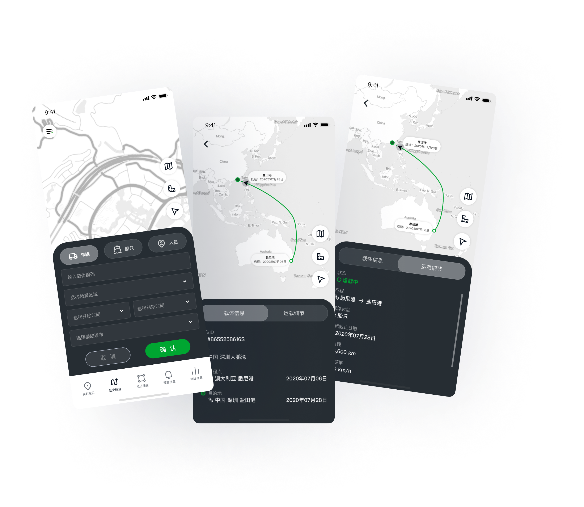
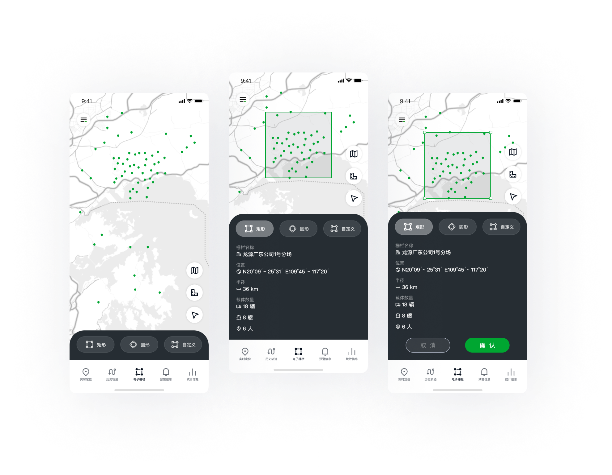
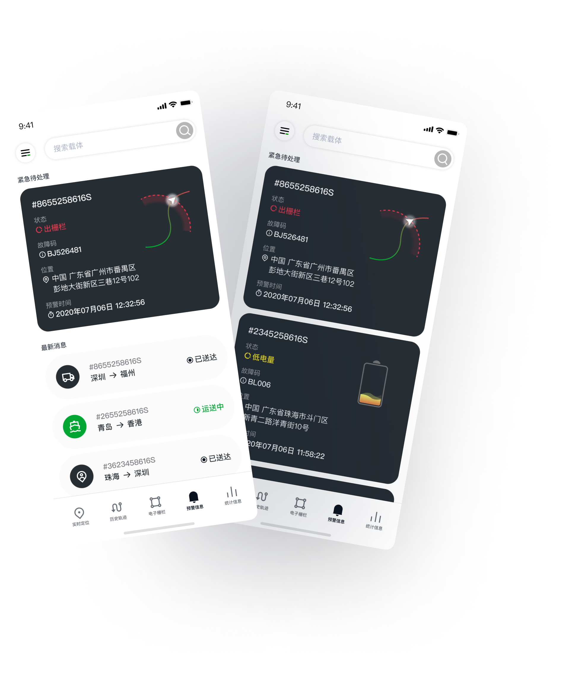
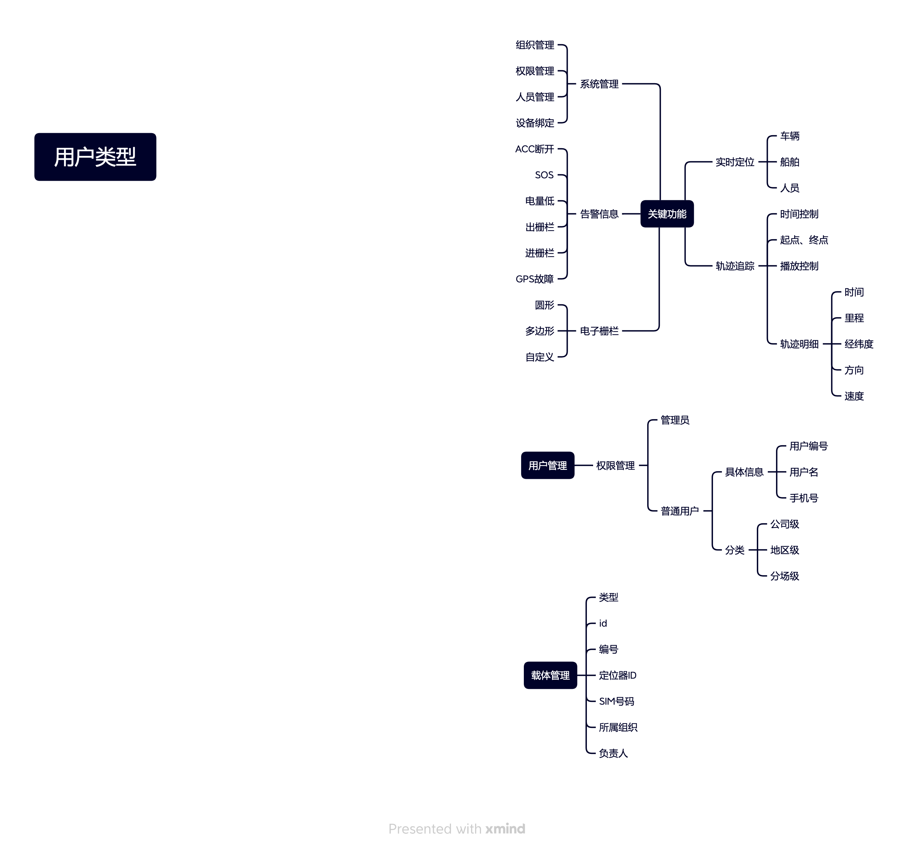
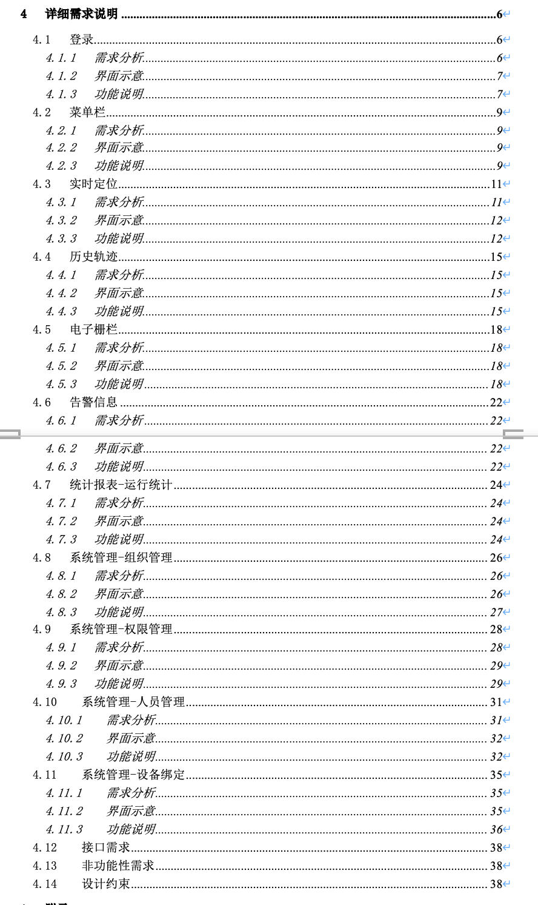
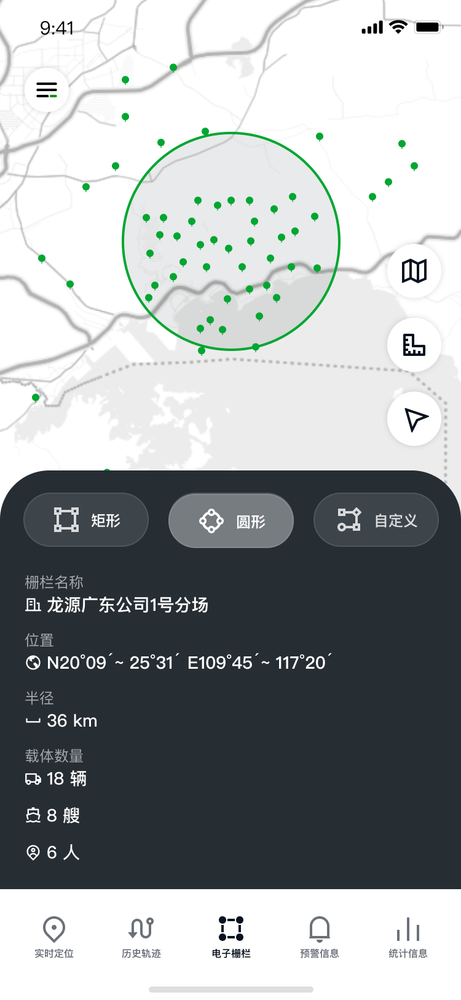
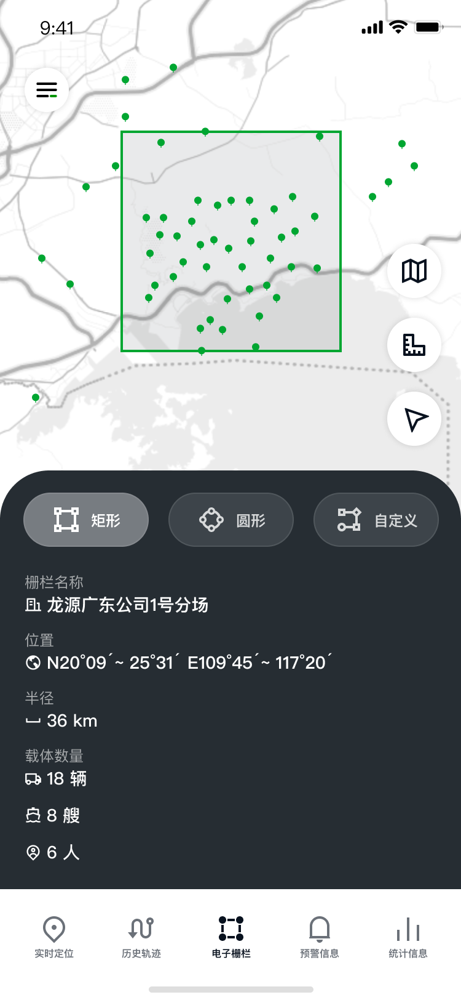
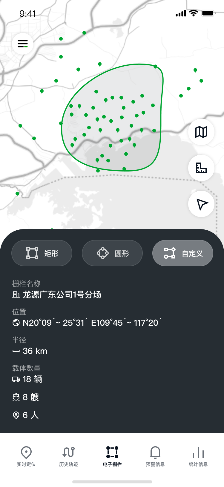
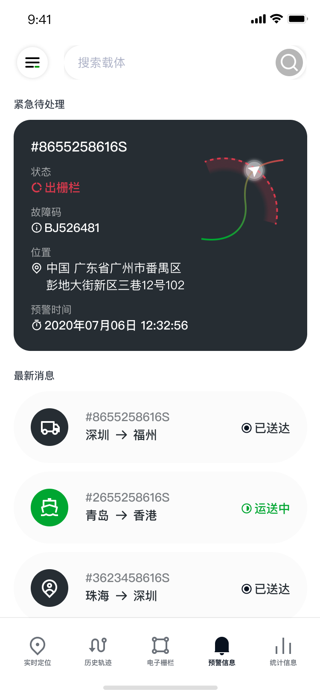
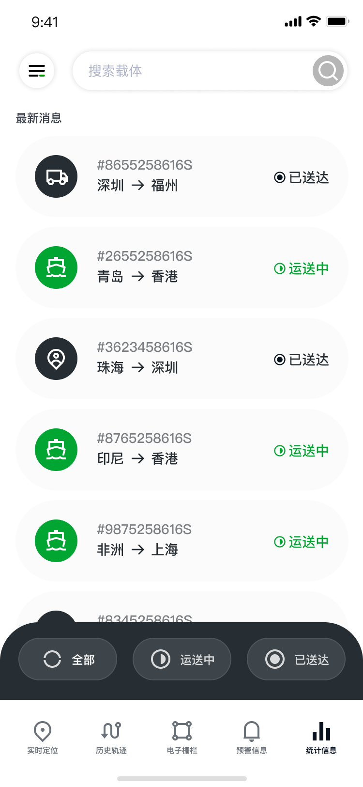

解决方案

载体定位更精准
轨迹跟踪系统
系统通过使运载管理变得便捷、高效，为用户节省时间，帮助做出最佳决策，以易于理解和可操作的方式提示用户进行操作。系统根据 GPS 与北斗定位为你找到最准确的载体位置。
主导设计国家能源集团的轨迹定位跟踪系统，重塑了载体管理的展示形式与预警机制，大幅提升运营效率。
国家能源集团是世界 500 强排名第 85 位的中央骨干能源企业。2017 年重组合并后，旗下管理的分区与载体数量呈指数倍上升，后台需要管理几百个分区、数千个载体应用。
在公司高速增长的同时，当下管理方式的时效性与统筹能力受到挑战，亟需升级系统化辅助管理手段。目标是在一个月内重塑载体跟踪定位的展示状态与预警形式，并优化辖区管理载体流程。
六个成员根据预选硬件跟载体的常规运行状态，在本地测试了现有的监控方案。目标是了解现阶段设备监控定位的状况以及现有的解决方法。
与 2 位产品研究员合作，探索现有的载体运行方式后发现：用户希望以事半功倍的方式完成任务。随着载体数量的增加，他们的期望也在逐渐演变。
如果在最常规使用场景中，拥有最佳信号的用户也会遇到麻烦，那么在更具挑战性的环境下的体验又会有多糟？这个思考揭示了一个机会——为任何环境的用户优化载体管理体验，成为我们的北极星目标。
当载体没有按照预期运行时，用户需要更多精力去完成任务协调等工作。他们期望平台可以完成这项工作，降低人工协调任务的频率。
现有定位系统精度不足，载体位置频繁出现偏差，遇到突发状况时无法迅速准确定位目标载体，影响响应效率。
大量告警与状态信息堆积，缺乏优先级排序，管理员难以在短时间内判断最需要处理的任务，造成信息过载。
现有流程增加了突发状况的几率，用户需要耗费额外沟通才能解决问题，导致时间浪费、效率低下。
定位器内容信息一次性全部展示，无主次之分，依赖系统信息人工筛选重点内容。
辖区载体归属不清晰，跨区调度缺乏统一管理视角，难以高效统筹。
历史轨迹无法回溯，突发事故后无法还原运行路径，责任追溯困难。
60% 的载体存在位置偏差，精度不足导致遇到紧急状况时无法迅速响应。
完全投入设计之前，定义成功的关键点和了解现有顺利运行的载体管理比例非常重要。通过结构完美的使用概念，以时间、地点和体验三个维度进行建模。
| 维度 | 信号 | 衡量标准 |
|---|---|---|
| 指定地点运载 | 定位失误 | 指定位置与实际位置之间的距离 |
| 顺利运载 | 压力值、满意度 | 载体故障、订单重排、沟通负担 |
| 常规运载 | 预计到达时间准确性 | 延迟率、准时到达率 |
| 指定时间运载 | 取消率 | 客户取消率、完成率 |
核心设计问题
轨迹跟踪系统
系统通过使运载管理变得便捷、高效，为用户节省时间，帮助做出最佳决策，以易于理解和可操作的方式提示用户进行操作。系统根据 GPS 与北斗定位为你找到最准确的载体位置。

当你不确定载体的运行状态时，系统将实时跟踪并汇报载体的运行轨迹与当前状态，确保你随时随地可查看目标载体运行动态。

以分区的方式管理载体。根据项目与地区灵活管理载体，你可以更快获取关键信息，大幅减少无效通讯与误操作。

根据载体上报信息按紧急程度与时间排序，帮助你优先处理权重高的任务。系统自动分级预警，减少人工判断成本。
为用户打造不受地域信号限制的完美载体管理体验，以下三个主要问题影响了设计策略："怎么为所有载体与用户进行设计？""需要考虑哪些关键因素？""载体管理完美方式是怎么样的？"在早期，了解影响用户和载体体验的因素非常重要。
现有的载体管理方式对于基站少的地区体验很差。我尝试采用一种面向各地区用户的设计方法来说服团队突破现有体验。
脑图的目的是突出当管理庞大量级的载体时需要面临的短/长期问题范围，这些临时情境的目的是突出每个人都会经历的情境。
从既往经历看，现有的载体管理流程对少基站地区用户缺乏同理心。我们的目标是创建设计解决方案，从一开始就考虑到所有可能出现的问题。
从不好的载体管理体验逆向思考刺激创造力。这样做出现了三个关键设计指标挑战：如何更好地了解载体所在位置？如何制定一个简易和节省时间的载体管理方式？如何更好地减少人为失误？
不准确
准确
显而易见
智能感知
低效管理
提升效率
采用 GPS + LBS 双定位方案，提升定位精度与信号覆盖范围。
默认展示当前运行中的载体，异步更新位置，减少等待时间。
智能预警分级处理，栅栏系统自动检测越界，减少手动判断。
为了优化用户体验，我们需要知道一个关键信息——载体的运输状态。在团队的讨论中，大家很快就认同了在应用程序启动时优先展示现有正在运行的载体，这与用户的心理模型相符。这也有助于解锁更多情景，例如提供载体的实时运行轨迹、运行状态以及预警信息来帮助提升管理体验。
为了弥补新出现的问题，我设计了搜索功能——这是找到目标载体的快捷方式，使用户可以在任何时候轻松访问他们当前最想查看的载体。
我们担心新的载体管理方式会有问题——首先展示的是当前旗下运行中的载体，跟既往流程不同。为了降低预设风险，我们在珠三角测试了设计的早期原型。
令我们惊讶的是，没有一个受测人员遇到了问题。载体的分区与实时检测深得参与者喜爱，验证了我们关于设计搜索功能的直觉。
默认展示辖区载体的思路推动了实时定位与历史轨迹功能的产生。与其在应用程序启动时锁定载体的位置（大约需要 12–15 秒才能获得准确的位置），不如在请求时获得最准确的 GPRS 位置与设备信息。这是个比较大的设计思路转变，从默认展示全部载体信息变成只专注当前运行中的载体。


主要问题：现有的定位系统不够准确，会出现丢失信号的情况。如果没有准确的运行轨迹，遇到突发状况时，用户无法迅速处理紧急情况。
我们的数据显示：
定位方案采用 GPS + LBS：
了解载体的任务和准确位置可以帮助我们为载体选择最优的区域管理方式。系统需要足够智能，能够在正常工作时自动运行，并在故障时进行干预。
适应性框架的基础概念：体验感的好坏取决于能否帮助用户确认载体是否照计划抵达目的地，或者明确载体位置。
栅栏设计模式需要允许选择加入、退出或完全控制。系统需要足够灵活，能够实现用户的想法，而非基于我们假设的正确答案来设计运行。



圆形 · 矩形 · 自定义 三种栅栏模式
根据"定位信息的可靠度"设计了信息预警流程。如果载体对当前位置没有异议，它将全力完成任务。否则，系统会提示用户验证载体的运行状态。
为了使管理更加高效，我们需要及时获悉载体运行情况。这带来了三个设计挑战：创建检测载体状态的算法；在不知道载体情况时系统进行调整；在智能默认设置和选择控制之间取得平衡。

为了使管理更加高效，我们需要及时获悉载体运行情况。这带来了几个设计挑战：

自我参与项目以来的 2 个月里，团队继续推进和优化视觉设计，并完善应用程序构建的细节功能。2020 年 7 月 2 日，国家能源集团推出了新的轨迹跟踪系统。以下是系统推出后 3 个月的关键指标变化。
出于保密原因，以上指标数值为相对变化量。
系统的重新设计对载体管理产生了积极的影响。然而，人员沟通协调率并没有显著降低，这意味着用户和载体人员继续相互联系以确认或协调运载细节。
相信这将是一个长期变化的过程——行为习惯的改变需要时间，而系统只是改变的起点。